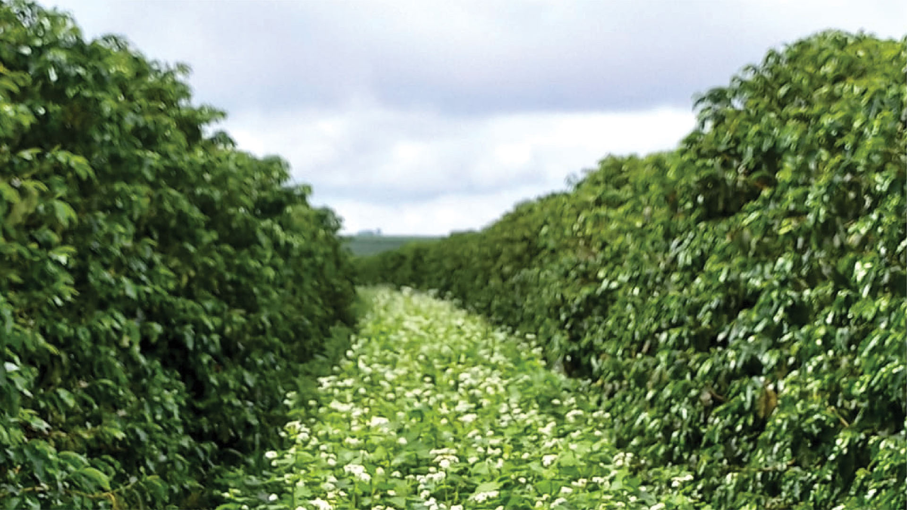
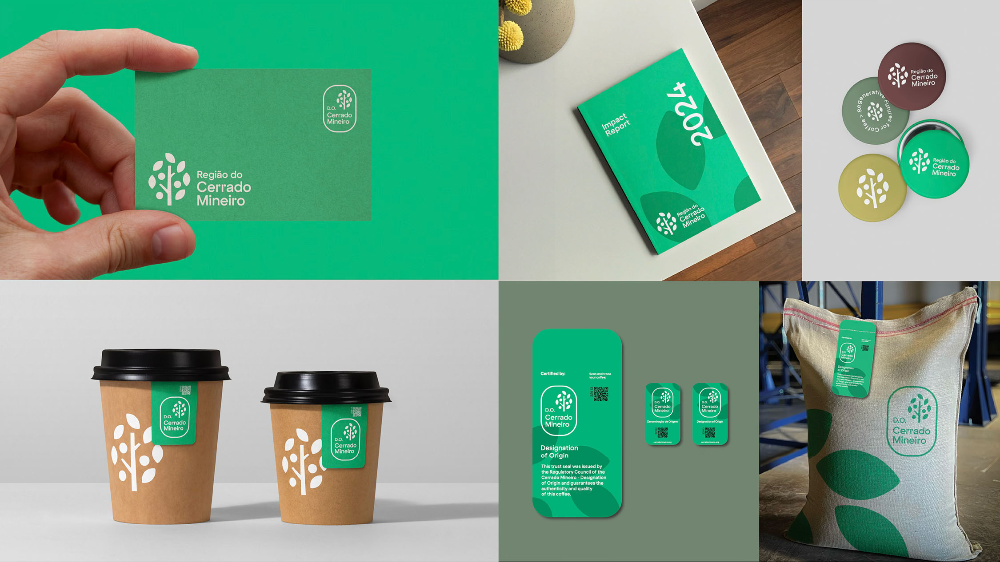
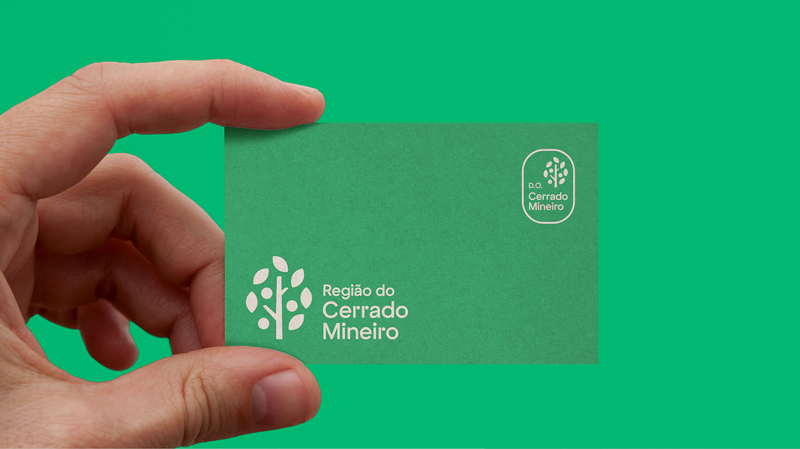
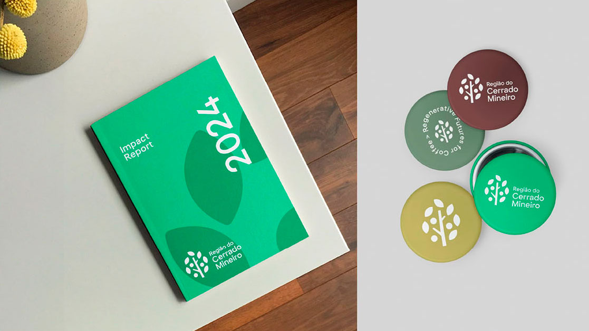
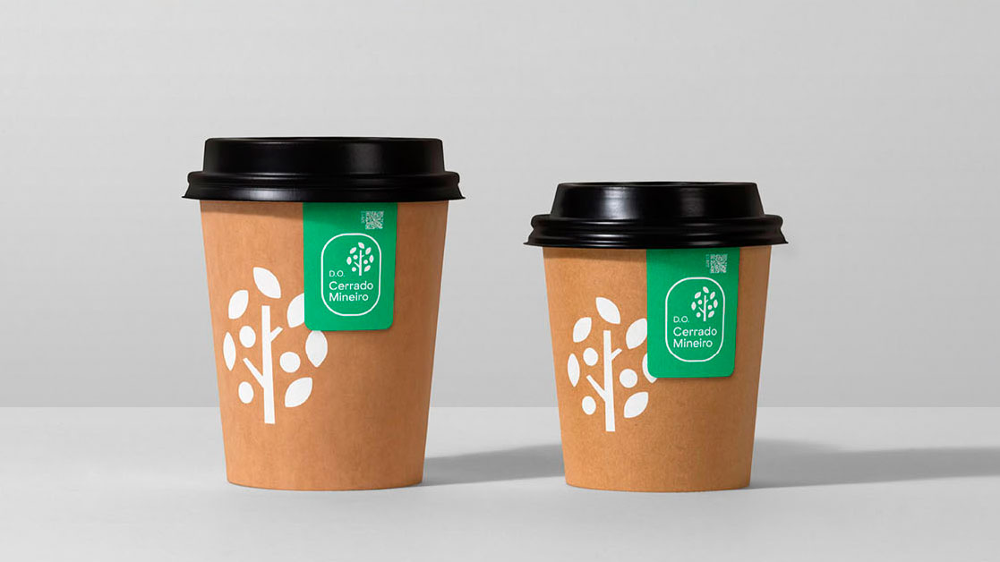
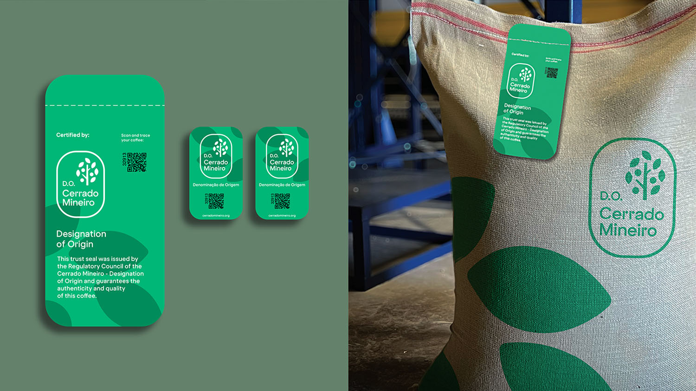

Na Região do Cerrado
Mineiro, sempre fomos pioneiros. Nosso espírito de inovação
e empreendedorismo posicionou a origem e nos trouxe o reconhecimento. Cada passo
dado e cada conquista refletem a atitude e o comprometimento da nossa gente.
Fomos os primeiros a criar uma identidade coletiva para o café brasileiro. Os primeiros
a conquistar a Denominação de Origem para cafés. A primeira Região a implementar
um Controle de Origem e Qualidade. Os primeiros a ter um produtor com
certificação regenerativa no mundo.
É este o legado que inspira, fortalece nossa identidade e nos legitima.
Mais do que uma origem
em uma era de transformação, estamos em uma jornada
de evolução para um ecossistema colaborativo, onde autenticidade, inovação e
regeneração se unem em um movimento sem fronteiras, projetando nossa região
como impulsionadora de transformação. Um laboratório vivo, onde
meio ambiente, as pessoas e os negócios prosperam em harmonia.
Nossa estratégia avança
em uma direção clara: ampliar uma identidade ja reconhecida
pela qualidade do produto para uma identidade que integra visão de mundo, projetos
conectados e geração de impacto real para o território.
Uma marca territorial não apenas promove produtos. Ela educa, engaja e inspira
mudanças reais, gerando valor compartilhado para todo o ecossistema do território.
Na Região do Cerrado
Mineiro, sempre
fomos pioneiros. Nosso espírito de inovação
e empreendedorismo posicionou a origem
e nos trouxe o reconhecimento. Cada passo
dado e cada conquista refletem a atitude
e o comprometimento da nossa gente.
Fomos os primeiros a criar uma identidade
coletiva para o café brasileiro. Os primeiros
a conquistar a Denominação de Origem para
cafés. A primeira Região a implementar
um Controle de Origem e Qualidade. Os
primeiros a ter um produtor com
certificação regenerativa no mundo.
É este o legado que inspira, fortalece
nossa identidade e nos legitima.
Mais do que uma origem
em uma era de
transformação, estamos em uma jornada
de evolução para um ecossistema colaborativo,
onde autenticidade, inovação e regeneração
se unem em um movimento sem fronteiras,
projetando nossa região como impulsionadora
de transformação. Um laboratório vivo, onde
meio ambiente, as pessoas e os negócios
prosperam em harmonia.
Nossa estratégia avança
em uma direção
clara: ampliar uma identidade ja reconhecida
pela qualidade do produto para uma identidade
que integra visão de mundo, projetos conectados
e geração de impacto real para o território.
Uma marca territorial não apenas promove
produtos. Ela educa, engaja e inspira
mudanças reais, gerando valor compartilhado
para todo o ecossistema do território.

Este é nosso propósito.
Não apenas uma declaração de intenção, mas o
compromisso de uma região que decide que a sua origem é apenas o começo.
Estamos construindo um futuro, onde nossa origem é o alicerce deste
movimento transformador, que transcende a produção e ambiciona consolidar
esta visão a partir da Região do Cerrado Mineiro, inspirando e conectando
comunidades e futuras gerações.
Este é nosso propósito.
Não apenas uma
declaração de intenção, mas o compromisso
de uma região que decide que a sua origem
é apenas o começo.
Estamos construindo um futuro, onde
nossa origem é o alicerce deste movimento
transformador, que transcende a produção
e ambiciona consolidar esta visão a partirda
Região do Cerrado Mineiro, inspirando e
conectando comunidades e futuras gerações.
A RCM não exporta apenas café.
Exporta um modelo. Um modo de
pensar e agir. Laboratório vivo que
integra empreendedorismo, inovação e
regeneração, a região projeta-se como
referência global, não apenas de origem,
mas de visão estratégica para o agro
e para a cafeicultura mundial.
Com 4.500 produtores em
55 municípios, a RCM é uma comunidade.
A nova marca territorial aprofunda o senso
de pertencimento e identidade,
conectando gerações, fortalecendo
cooperativas e consolidando uma cultura
de origem controlada que agrega valor
em toda a cadeia, do campo à xícara,
da fazenda ao investidor.
Mais do que preservar, regenerar é
transformar. A RCM já é a região com
a maior área de cafeicultura regenerativa
certificada do Brasil. Agora institucionaliza
essa vanguarda como pilar estratégico e
diferenciador de marca posicionando-se
como a primeira origem de café do
mundo a adotar a regeneração como
visão de desenvolvimento dos negócios
e do território, não apenas como
técnica agrícola.


A Denominação de Origem Cerrado Mineiro personifica um café
autêntico,
rastreável e conectado a ideias regenerativas, voltado para mercados e
consumidores conscientes que buscam impacto real.
Com o reposicionamento da marca territorial, a Denominação de Origem
ganha
um novo contexto: ela passa a ser o alicerce de um movimento maior, que vai
da certificação à regeneração, da rastreabilidade à visão de mundo.
A origem que impacta e define o futuro.
A Denominação de Origem Cerrado Mineiro
personifica um café autêntico, rastreável e
conectado a ideias regenerativas, voltado
para mercados e consumidores conscientes
que buscam impacto real.
Com o reposicionamento da marca
territorial, a Denominação de Origem ganha
um novo contexto: ela passa a ser o alicerce
de um movimento maior, que vai da certificação
à regeneração, da rastreabilidade à visão de
mundo. A origem que impacta e define o futuro.
produtores em 55 municípios
sacas produzidas por ano
12,7% da produção brasileira
exportação de cafés,
em todos os continentes
- 1ª Denominação de Origem de cafés do Brasil (2013)
- 1ª certificação ISO 9001 do mundo para uma região cafeeira
- 1ª fazenda de café com certificação regenerativa do mundo (Regenagri - Control Union, 2022)
- Maior área de cafeicultura regenerativa certificada do Brasil (quase 30.000 hectares)
- Crescimento de 160% na certificação de origem em 2024
- Primeiro café comercializado em escala global, com selo regenerativo. (Parceria com a illy caffè, 2023)
- 1ª Denominação de Origem de cafés do Brasil (2013)
- 1ª certificação ISO 9001 do mundo para uma
região cafeeira
- 1ª fazenda de café com certificação regenerativa
do mundo
(Regenagri - Control Union, 2022)
- Maior área de cafeicultura regenerativa
certificada do Brasil
(30.000 ha)
- Crescimento de 160% na certificação
de origem em 2024
- Primeiro café comercializado em escala global, com
selo
regenerativo. (Parceria com a illy caffè, 2023)
A
ambição de se consolidar como um ecossistema vivo e uma referência
territorial global
demandou uma redefinição da marca Região do Cerrado Mineiro, por meio de uma evolução
do nosso logotipo e da criação de uma nova linguagem de marca que expressa e comunica
este novo momento.
É a
tradução visual de uma mudança de postura de uma região reconhecida
pela
singularidade do seu café, para um ecossistema vivo focado em impacto real.
A
ambição de se consolidar como um
ecossistema vivo e uma referência territorial
global demandou uma redefinição da marca
Região do Cerrado Mineiro, por meio de uma
evolução do nosso logotipo e da criação
de uma nova linguagem de marca que
expressa e comunica este novo momento.
É a
tradução visual de uma mudança
de postura de uma região reconhecida
pela singularidade do seu café, para um
ecossistema vivo focado em impacto real.





Para que a marca territorial alcance a ambição da região. Não basta ser uma grande origem de qualidade. A RCM quer liderar um futuro regenerativo para o café, e isso exige uma identidade à altura dessa visão.
A identidade passa de produto para visão de mundo. A Denominação de Origem continua sendo o alicerce. O que muda é o movimento que ela sustenta, mais amplo, mais colaborativo, mais impactante.
Não apenas. A visão regenerativa é uma filosofia de desenvolvimento — que se aplica ao modo como produzimos, inovamos, nos organizamos e vivemos. A agricultura regenerativa é uma prática dentro desse universo, não o universo inteiro.
Uma marca territorial não promove apenas produtos. Ela educa, engaja e inspira mudanças reais — gerando valor compartilhado para todo o ecossistema de um lugar. É a ideia que une produtores, cooperativas, parceiros e comunidades em torno de um propósito comum.
Não. A DO permanece como o alicerce jurídico e técnico da identidade territorial. O reposicionamento amplia o seu significado, ela passa a ser o ponto de partida de um movimento maior que vai da certificação à regeneração.
A identidade coletiva da região se fortalece. Cada produtor passa a fazer parte de um ecossistema de marca com mais força e mais alcance. Não é apenas um café de origem — é um café que carrega um propósito.
"Café" como um ecossistema vivo de valor, de produção, inovação, consumo, educação, comunidade, turismo, equidade. Este tagline declara que a RCM lidera a transformação desse ecossistema inteiro, não apenas de uma cadeia produtiva.
Este é um convite aberto. Para produtores, cooperativas, parceiros e lideranças que acreditam que é possível fazer diferente. Entre em contato conosco: comunicacao@cerradomineiro.org